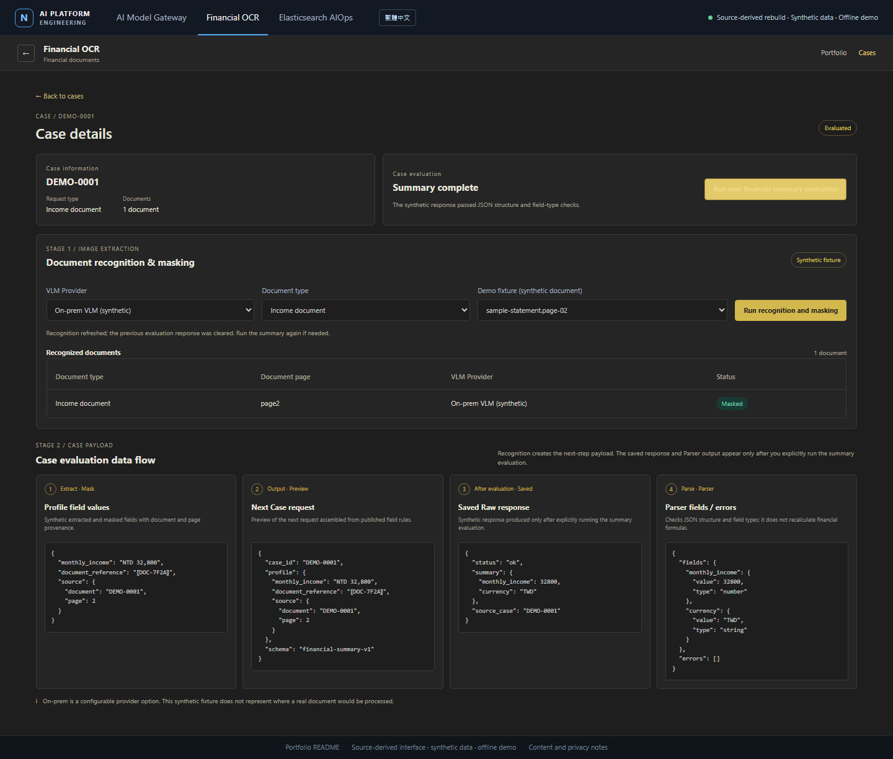
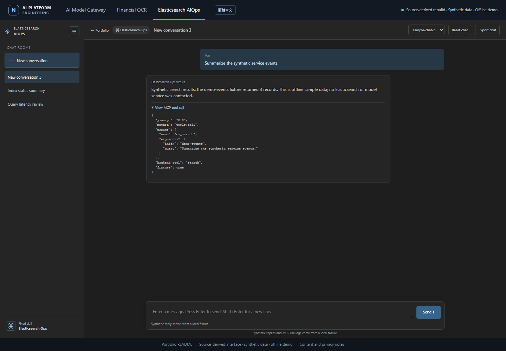
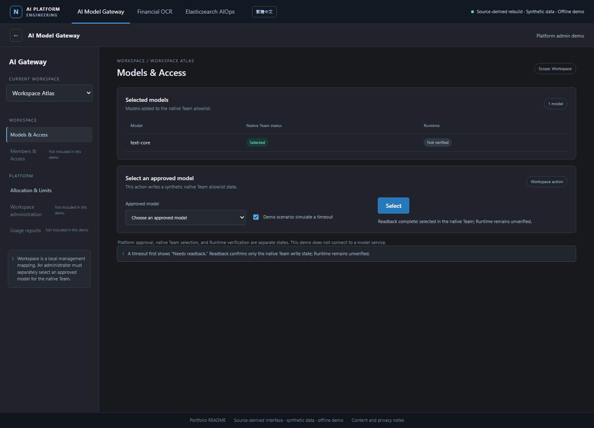

01DOCUMENT AI
Financial OCR
Trace document extraction, reversible pseudonymization, an allowlisted case payload, and a separately triggered evaluation response.
Walk through OCR Technical case study

Offline synthetic walkthroughENGINEERING PORTFOLIO / MODEL PLATFORM
A Flask control plane manages native LiteLLM objects across Workspaces and Teams. The engineering challenge is to make access changes reviewable, distinguish approval from native allowlist state, and reconcile uncertain remote outcomes through readback.
Live app requires local Python setup · offline walkthrough uses synthetic records only
APPLICATIONS
The Gateway administers model access. OCR and Elasticsearch chat are application examples with their own configured model endpoints.
Trace document extraction, reversible pseudonymization, an allowlisted case payload, and a separately triggered evaluation response.
Walk through OCR Technical case study
Offline synthetic walkthroughExplore a fixed Elasticsearch operations skill, JSON-RPC MCP calls, and deterministic fixture responses in a chat-room layout.
Walk through chat Technical case study
Offline synthetic walkthroughACCESS MANAGEMENT
Platform approval records a governance decision. A Workspace administrator then selects the approved model for the native Team. Runtime verification remains a separate check.
View the local Gateway walkthrough capture →